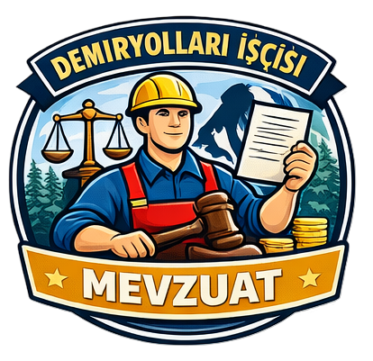
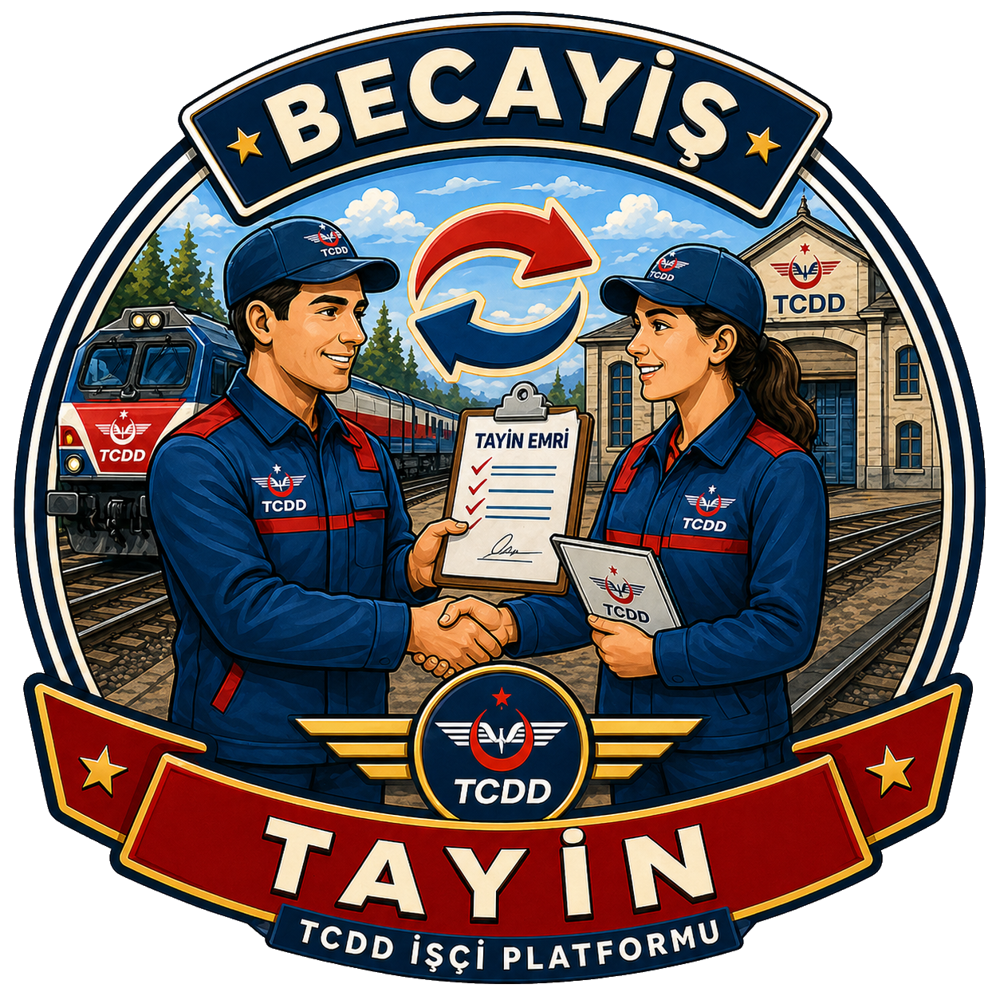

Maaş ve İkramiye
Gelir, kesinti, net ödenen ve ikramiye/tediyeyi bilgilendirme amaçlı hesaplar.
Demiryolu işçi ağı
Maaş ve ikramiye hesaplama, mevzuat dokümanları, misafirhaneler, yıllık izin, çalışma takvimi ve becayiş talepleri için hazırlanan bağımsız yardımcı platform.
Uygulama başlıkları
Gelir, kesinti, net ödenen ve ikramiye/tediyeyi bilgilendirme amaçlı hesaplar.

Sözleşme, yönerge, ücret cetveli ve ek dokümanlara hızlı erişim sağlar.

Üyelerin karşılıklı bölge/il taleplerini eşleştirmeye yardımcı olur.
TCDD ve ilgili tesis bilgilerini, iletişim ve yönlendirme amaçlı listeler.
Bu platform bilgilendirme ve öğrenme amacıyla hazırlanmıştır. TCDD, TÜRASAŞ veya bağlı kurumların resmi bordro, duyuru ya da insan kaynakları sistemi yerine geçmez.
KVKK ve hesap yönetimi
Uygulama üyelik, hesap yönetimi, personel kartı, takvim ve becayiş özellikleri için gerekli verileri kullanır. Kullanıcılar hesap ve veri silme talebi oluşturabilir.